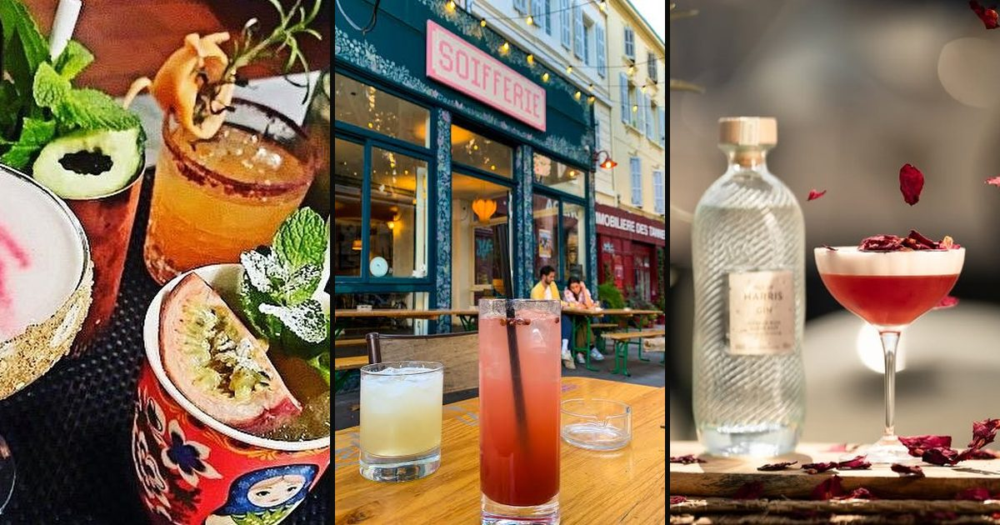

La tournée · Bars à cocktails
Où sont les meilleurs cocktails du Cours Julien ?
Mixologie · Visite des trois meilleurs bars à cocktails du quartier. Suivez-nous dans la quête du cocktail rare.
Lire l’articleDes articles sur les lieux et les gens du quartier. Des tournées à pied, des portraits, des histoires de comptoirs. Écrits depuis le Cours Julien, La Plaine et Notre-Dame-du-Mont.